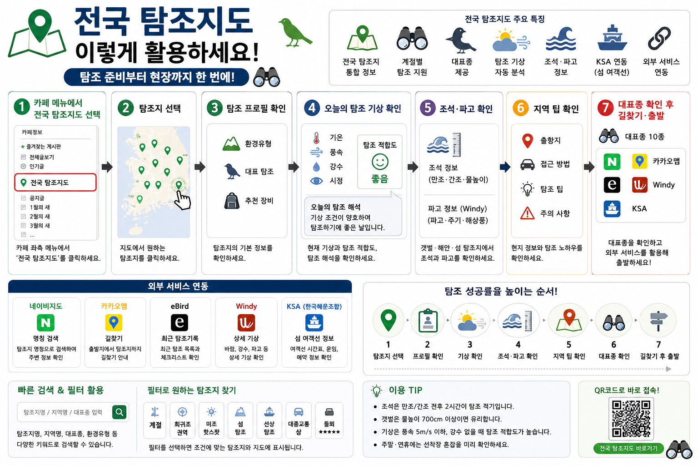

전국 탐조지도
최종 업데이트: 2026.07.11 · v27 신규 후보 20곳 조석·기상 반영 · 183개 권역
© 2026 들뫼생태연구회 · All rights reserved.
필터 숨기기
검색 열기
📢 지금 볼 만한 탐조 이슈
0
📘 지도 사용법
🔍 탐조지·지역·국가·종 검색
검색
엑셀 위도·경도 좌표 그대로 반영
필터 열기
🗓 계절 필터
봄
여름
가을
겨울
🐦 권역 필터
🌏 해외탐조만
희귀조권역
미기록·희귀 가능성
섬탐조
선상탐조
대중교통 좋은 곳
들뫼 추천
전체 보기
🧭 탐조특성 필터
이동성 조류
도요물떼새
겨울철새
맹금
바다새
갈매기
희귀조
📋 검색 결과 목록
검색하면 결과가 여기에 표시됩니다.
🚗 복수 탐조지 루트
루트 보기
두 곳 이상 함께 검색하면 루트가 표시됩니다.
📢 이달의 탐조 기획
닫기
현재 게시 중인 기획글이 없습니다.
📘 전국 탐조지도 사용법
닫기

한 달 조석
닫기
월간 조석 자료를 불러오는 중입니다.
眞
井